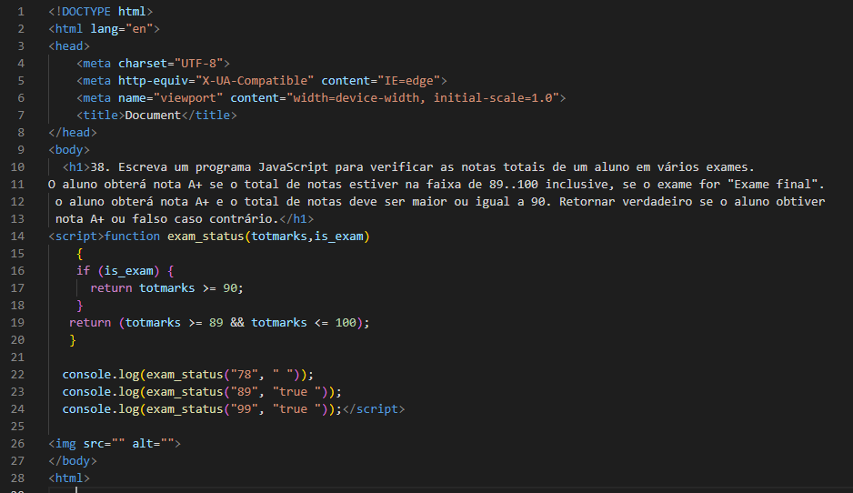

38. Escreva um programa JavaScript para verificar as notas totais de um aluno em vários exames.
O aluno obterá nota A+ se o total de notas estiver na faixa de 89..100 inclusive, se o exame for "Exame final".
o aluno obterá nota A+ e o total de notas deve ser maior ou igual a 90. Retornar verdadeiro se o aluno obtiver
nota A+ ou falso caso contrário.
